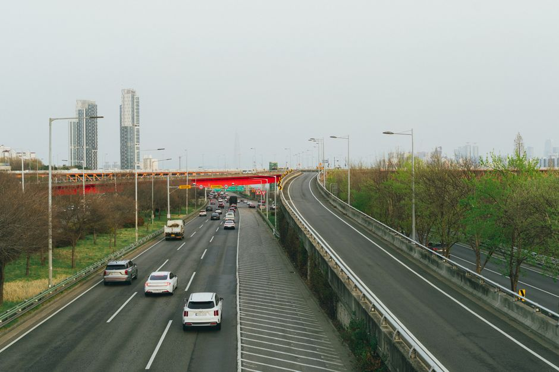

2026년 정책자금 3차 변경 공고 — 36,820억, 지금 무엇이 바뀌었나

2026년 소상공인 정책자금 3차 변경 공고에 따른 한도·조건 조정 내용입니다.
한 줄 요약
2026년 소상공인 정책자금의 총 운용 규모가 36,820억원으로 확정·공고됐다. 자금 종류는 일반경영안정자금(12,200억), 특별경영안정자금(17,200억), 성장기반자금(7,420억) 등 4개 계열 13종이며, 신청은 온라인(소상공인정책자금 사이트) 또는 오프라인(전국 80개 지역센터)으로 한다.
자금별 공급 규모 (공고문 표 복제)
| 자금 | 성격 | 공급 규모(억원) |
|---|---|---|
| 일반경영안정자금 | 업력 무관 일반 소상공인 | 12,200 |
| 특별경영안정자금 | 위기·취약 소상공인 | 17,200 |
| └ 재해자금 | 재해 피해 | 1,000 |
| └ 긴급경영안정자금 | 매출감소 등 일시적 경영애로 | 1,200 |
| └ 홈플러스 피해 자금 | 홈플러스 피해 소상공인 | 500 |
| 신용취약자금 | 중·저신용(NCB 839점 이하) 전용 | 7,000 |
| └ 대환대출 | 7% 이상 고금리 → 4.5% 저금리 전환 (NCB 919점 이하) | 3,000 |
| 재도전특별자금 | 재창업·채무조정 성실상환자 | 1,000 |
| 장애인기업지원자금 | 장애인기업 전용 | 500 |
| 청년고용연계자금 | 청년 대표 또는 청년 고용 소상공인 | 3,000 |
| 성장기반자금 | 성장 유망 소상공인 | 7,420 |
| └ 소공인특화자금 | 소공인 전용 | 2,000 |
| └ 혁신성장촉진자금 | 수출·매출신장·졸업후보·스마트공장/스마트기술 도입 | 4,800 |
| └ 민간투자연계형 매칭융자 | 민간 투자·펀딩 유입 기업 | 360 |
| └ 상생성장지원자금 | 온라인 플랫폼 선별·육성과 정책자금 결합 | 260 |
| 합계 | 36,820 |
한도·금리 (3차 변경 기준)
- 한도: 정책자금 대출잔액 + 신규 대출예정액 합산, 기업당 운전자금 5억원 이내 (시설자금 포함 시 10억원 이내). 긴급경영안정자금은 한도 별도 운용.
- 금리: 정책자금 기준금리(분기별 변동) + 사업별 가산금리. 일부 자금은 고정금리. 기준금리는 소진공 홈페이지에 분기 공지 (현재 3/4분기 3.85%, 2026.7.10.~).
- 기존 대출 기업도 기준금리 변동에 따라 금리가 변동된다(일부 자금 제외) — "예전에 낮은 금리로 빌렸으니 안전"은 성립하지 않는다.
우대금리 — 최대 0.8%p, 유형 내 중복 불가
| 유형 | 대상 | 감면 |
|---|---|---|
| 정책 우대 | 소진공·은행권 컨설팅 업체, 제로페이 가맹점, 디지털 온누리상품권 가맹점 | △0.1%p |
| 정책 배려 | 여성기업, 장애인기업, 일회용품 사용규제 적응 우수기업 | △0.1%p |
| 사회안전망 | 자영업자 고용보험, 전통시장 화재공제, 풍수해보험, 노란우산공제 | △0.1%p |
| 성실상환 | 최근 3년 내 연속 10일 이상 연체 없이 원금분할상환 중이거나 완제 | △0.3%p |
| 지역 격차해소 | 비수도권 소재 (수도권 내 인구감소지역 포함) | △0.2%p |
지금 바로 할 수 있는 일: 사회안전망 항목은 오늘 가입해도 다음 신청부터 반영될 수 있다. 노란우산공제·고용보험·화재공제·풍수해보험 중 하나라도 빠져 있으면 가입 후 신청하는 편이 유리하다. 단 고정금리 상품(장애인기업지원자금, 재해자금, 대환대출 등)은 우대 적용 대상이 아니다.
신청 방법과 절차의 두 갈래
- 온라인: 소상공인정책자금 사이트(https://ols.semas.or.kr)에서 접수
- 오프라인: 소진공 지역센터 전국 80곳 방문 접수
- 직접대출: 소진공이 지원대상 판단 → 사업성 평가·한도 산정 → 대출 약정·실행까지 전부 소진공이 처리
- 대리대출: 소진공이 지원대상 여부만 판단 → 신용보증재단이 보증서 발급 → 금융기관이 보증서부 대출 심사·실행 (신용·담보부는 금융기관이 직접 평가)
자세한 두 갈래의 차이와 선택 전략은 직접대출 vs 보증부·대리대출 신청 전략 글, 상품별 자격표는 2026년 정책자금 13종 총정리를 참조.
거절되는 경우 — 융자제한
- 세금 체납 중이면 융자 대상에서 제외. 단 압류·매각 유예(구 체납처분 유예), 징수특례, 체납처분 유예 중 하나라도 적용 중이면 직접대출에 한해 포함된다. 세무서에서 유예 승인서를 받아두는 것이 관건.
- 한국신용정보원 "일반신용정보관리규약"에 따른 신용정보 등록 등 추가 제한 사유가 공고문에 있다 — 신청 전 본인 신용정보를 먼저 확인하는 편이 안전하다.
실태조사·사후관리 — 용도 외 사용은 조기회수
대출 실행 후에도 당초 용도에 맞게 집행됐는지 관련 자료 징구 등 실태조사가 실시된다. 용도 외 사용이 확인되면 자금 조기회수 등 제재 조치가 실행된다. 사업자금과 개인 자금을 분리해 두지 않아 트러블이 나는 사례가 흔하니, 대출 실행 전에 전용 계좌를 분리해 두자.
다음 행동 체크리스트
- □ 우리 업종이 융자제외 업종(공고문 별표1, 24쪽)인지 먼저 확인 — 여기 해당하면 어떤 자금이든 거절
- □ 세금 체납 여부 확인 (홈택스). 체납 중이면 유예 승인부터
- □ 우대금리 5개 유형 중 해당 항목 가입 (최대 0.8%p)
- □ 직접 vs 대리 선택 후 해당 창구 접수 (ols.semas.or.kr 계정 준비)